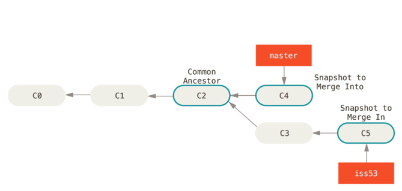

Haarat
Johdanto
Jos halutaan kehittää samasta ohjelmistosta useita rinnakkaisia versioita yhtaikaa, tarvitaan versiopuuhun haara (branch)
Haarautumista tarvitaan esim., kun - Kehitetään tuotteen seuraavaa versiota samaan aikaan, kun nykyiseen tehdään korjauksia - Tehdään asiakaskohtaisia korjauksia tai räätälöintejä - Moni kehittäjä kehittää samaa ohjelmistoa yhtaikaa.
Lähde: Git Branch, Atlassian
Jokaisessa mainituista tapauksista halutaan tehdä yhtaikaisesti kehitystä kahteen tai useampaan versioon ohjelmistosta. Monen kehittäjän tapauksessa jokainen kehittäjä luo omaa versiotaan ohjelmistosta.
Versionhallintajärjestelmän keinoin haarautuneet versiot ohjelmistosta voidaan jälleen yhdistää (merge). Esimerkiksi, kehittäjä yhdistää oman kehityshaaransa muutokset yhteiseen versiohaaraan, josta toiset kehittäjät saavat sen käyttöönsä ja edelleen kehitettäväksi.
Miten Git toimii
Haarautumisen ymmärtämiseksi on syytä perehtyä muutamiin Git:n toimintaperiaatteisiin.
Talletus (commit) tallettaa 1. viittaukset niihin tiedostoversioihin, jotka olet sinne lisännyt (snapshot), sekä 2. viittauksen edelliseen talletukseen.
Muutoksia voi siis navigoida taaksepäin seuraamalla viittauksia.
Haara (branch) on viittaus talletukseen, josta tulee aikanaan seuraavan talletuksen edeltäjä. Kun teet uuden talletuksen, haaraviittaus siirtyy eteenpäin osoittamaan tekemääsi uutta talletusta.
Haara siis antaa nimen tiettyyn talletusketjuun, ja haaraviittauksen avulla löydetään sen tuorein talletus.
HEAD on viittaus siihen haaraan, jossa tällä hetkellä olet. Se on looginen tunniste, ei haara.
Jokin haara on aina valittuna, HEAD viittaa aina johonkin haaraan.

Lähde: Chacon S., Straub B, Pro Git, luku 3. CC BY-NC-SA 3.0
Uuden haaran luominen
Kun perustat repositoryn, sinulle on jo valmiiksi luotu yksi haara nimeltä master, ja HEAD viittaa siihen. Se on Git:n oletushaara.
Joka kerta, kun teet talletuksen, master-viittaus siirtyy eteenpäin siihen, jonka juuri teit.
Voit luoda haaran komennolla branch.
Tämä luo uuden haaran, joka osoittaa samaan talletukseen kuin nykyinen haarasikin. Tällä hetkellä haarojen välillä ei ole mitään eroa.
Huomaa, että HEAD ei siirry! Olet edelleen master-haarassa.

Lähde: Chacon S., Straub B, Pro Git, luku 3. CC BY-NC-SA 3.0
Haaran vaihtaminen
Näet nykyisen haarasi komennolla status
Näet olemassa olevat haarat komennolla branch
Haaran voit vaihtaa komennolla switch
Nyt HEAD osoittaa uuteen testing-haaraan, ja seuraava talletus tulee menemään siihen.

Lähde: Chacon S., Straub B, Pro Git, luku 3. CC BY-NC-SA 3.0
Haarauttaminen
Toistaiseksi ei ole vielä tehty mitään muutoksia, mutta tehdäänpä nyt yksi talletus (nykyinen haara on siis testing).
testing-haara siirtyy nyt yhden talletuksen eteenpäin, mutta master jää ennalleen.

Lähde: Chacon S., Straub B, Pro Git, luku 3. CC BY-NC-SA 3.0
Jos nyt vaihdat takaisin master-haaraan,
HEADsiirtyy osoittamaanmaster-haaraa ja- työhakemiston tiedostot muutetaan takaisin master-haaran tilanteeseen.

Lähde: Chacon S., Straub B, Pro Git, luku 3. CC BY-NC-SA 3.0
Haaroissa master ja testing on nyt erilaiset versiot. Vaihtamalla haaraa voit tarkastella niitä, kehittää niitä eteenpäin ja tehdä niistä uusia versioita toisistaan riippumatta.
Eri haaroihin tehdyt muutokset pysyvät erillisinä, ja voit milloin tahansa palata lähtötilanteeseen, jos tulet katumapäälle. Toiseen haaraan tekemäsi muutokset jäävät silti talteen, ja voit jatkaa niidenkin kehittämistä.
Eriytyneet haarat
Jos esimerkissämme nyt teet uuden talletuksen master-haaraan, projektilla on kaksi toisistaan erkaantunutta haaraa. Erkaantunut tarkoittaa sitä, että molemmissa haaroissa on talletuksia, joita toisessa ei ole.
Molempia voidaan kehittää eteenpäin toisistaan riippumatta täysin hallitusti.
Lähde: Chacon S., Straub B, Pro Git, luku 3. CC BY-NC-SA 3.0
Nyt commit-lokin esittäminen käy vähän hankalammaksi, kun on esitettävä rinnakkain eteneviä historiapolkuja, esim näin:
Haaroittumisen visualisoinnissa graafiset työkalut voisivat olla paikallaan, esim. GitGUI
Yhdistäminen (merge)
Haaroihin eriytynyt kehitys halutaan usein jälleen yhdistää, esim. haarassa tehty korjaus halutaan viedä pääkehityshaaraan.
Seuraavassa esimerkissä pääkehityshaara on master ja haaraan iss53 on tehty vikakorjausta. Vikakorjaus on nyt valmis ja se halutaan viedä pääkehityshaaraan.

Lähde: Chacon S., Straub B, Pro Git, luku 3. CC BY-NC-SA 3.0
Yhdistämisen logiikka on, että haaraan, johon yhdistetään, tehdään uusi talletus, joka sisältää molempien haarojen muutokset.
Tässä esimerkissä on kehitetty korjausta haarassa iss53. Sen yhdistäminen master-haaraan käy näin:
git switch master # siirrytään siihen haaraan, johon muutos halutaan yhdistää
git merge iss53 # yhdistäminen tehdään komennolla merge
Lähde: Chacon S., Straub B, Pro Git, luku 3. CC BY-NC-SA 3.0
Konflikti (merge conflict)
Jos eri haarojen muutokset ovat joltain osin keskenään ristiriitaisia, yhdistäminen ei onnistukaan suoraan, vaan Git raportoi konfliktin.
Tällöin talletus jää kesken, ja hakemistossa on konfliktin sisältävistä tiedostoista uudet versiot, joissa Git on yhdistänyt kaiken sen, mitä se automaattisesti kykeni. Git on merkinnyt ja lisännyt ristiriitakohtiin molempien haarojen muutokset.
Konflikti kuulostaa pahalta, mutta kyse on vain siitä, että ei ole mahdollista koneellisesti päättää, mikä on oikea tapa yhdistää muutokset. Kehittäjän on korjattava käsin ristiriitaiset kohdat (resolve conflict). Kun se on tehty, hän tekee normaalisti commitin.
Koodieditoreissa on toiminnallisuuksia, jotka auttavat konfliktien ratkaisemisessa.
Esimerkki konfliktista
$ git merge testing
Auto-merging hello.html
CONFLICT (content): Merge conflict in hello.html
Automatic merge failed; fix conflicts and then commit the result.
$ git status
On branch master
You have unmerged paths.
(fix conflicts and run "git commit``")
(use "git merge --abort" to abort the merge)
Unmerged paths:
(use "git add <file>..." to mark resolution)
both modified: hello.html
no changes added to commit (use "git add" and/or "git commit -a")
Konfliktin ratkaiseminen
Kehittäjä tekee oikeat korjaukset ja poistaa konfliktimerkit tiedostoista. Sitten vain lisätään korjatut tiedostot committiin ja tehdään commit.
$ git add .
$ git status
On branch master
All conflicts fixed but you are still merging.
(use "git commit" to conclude merge)
Changes to be committed:
modified: hello.html
$ git commit
[master 577421e] Merge branch 'testing'

Haarautumisen käyttötapoja
Haarautumista voit käyttää, kun haluat pitää uuden kehityksen erillään kehityksen, jotta et sotkisi toimivaa versiota keskeneräisillä, toimimattomilla tai epäyhteensopivilla commiteilla, esim.
- Kehität ominaisuutta, joka vaatii muutoksia nykyisiin toiminnallisuuksiin.
- Haluat kokeilla jotain turvallisesti sotkematta varsinaista kehitystä.
- Kehität tuotteen useita versioita yhtaikaa, esim. version 1 vikakorjauksia ja version 2 uuskehitystä.
Haaroittamisstrategioita on useita. Yksi yleinen ja yksinkertainen strategia on, että kaikki uudet ominaisuudet kehitetään omissa haaroissaan, ja ne yhdistetään päähaaraan vasta, kun ne ovat valmiita ja toimivia (feature branch workflow).
Toiminnallisuus omaan haaraan (feature branch)
Ota lähtökohdaksi päähaarasi (tässä master) tuorein commit
Luo uudelle ominaisuudelle haara (git branch) ja vaihda siihen haaraan (git switch). Tähän on pikakomento:
Tee muutoksia ja committeja feat123-haaraan, ja kun toiminnallisuus on valmis, yhdistä muutokset päähaaraan
Pysyvät ja väliaikaiset haarat
Useimmat työnkulut perustuvat siihen, että jotkin haarat ovat päähaaroja, joissa pidetään yllä tuoreinta tilannetta, ja yksittäisille ominaisuuksille voidaan tehdä omia väliaikaisia haaroja, jotka on tarkoitus yhdistää johonkin päähaaraan.
Päähaarat ovat sellaisia konfiguraatioita, joita kehitetään pitkän aikaa, esim. ohjelmiston versio 1, 2, 3 jne. Väliaikaiset haarat voidaan poistaa sen jälkeen, kun ne on onnistuneesti yhdistetty johonkin päähaaraan.
Myös voidaan toimia niin, että toimitettaville versioille (release) on omat päähaaransa, ja kehitys pidetään omassa päähaarassaan.
Tällöin väliaikaiset haarat yhdistetään ensin kehityshaaraan, ja kehityshaarasta yhdistetään release-haaraan vain valmiit testatut ja viimeistellyt toimitettavat versiot.
Tilanteeseen sopivinta haaroittamiskäytäntöä kannattaa miettiä projektin alussa hetki, vaikka olisit tekemässä projektia yksinkin. Yksittäinen kehittäjäkin voi tehostaa työtään hyödyntämällä haarautumista.
Harjoitus 4
Harjoitellaan ominaisuushaarojen (feature branch) käyttöä kehityksessä.
hello-ohjelmamme on vielä kovin riisuttu. Lisätään siihen HTML-sivun perusrakenne:- Talleta muutokset
master-haaraan. -
Lisätään tyylejä. Lisää projektiin tiedosto
styles.css, jonka sisältö voi olla esim.Tyylit pitää vielä liittäähtml { height: 100%; } body { background-color:linen; display: flex; flex-direction: column; justify-content: center; height: 100%; } main { text-align: center; }hello.html-tiedostoon. Lisää senhead-osioon määritys Testaa selaimessa, että sivun tyylit toimivat. -
Käytetään ominaisuushaaraa: Luo muutosta varten uusi haara esim. nimellä
tyylitja talleta tyylimuutokset sinne. -
Kokeile vaihtaa aktiivista haaraa haarojen
masterjatyylitvälillä ja lataa sivu selaimessa aina uudelleen. Miten sivu muuttuu? -
Kun olet tyytyväinen
tyylit-haaran versioon, yhdistä semaster-haaraan. -
Kokeile vaihtaa aktiivista haaraa haarojen
masterjatyylitvälillä ja lataa sivu selaimessa aina uudelleen. Miten sivu muuttuu?